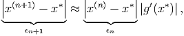
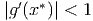
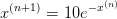
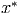
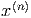
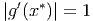
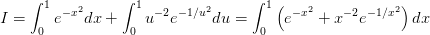
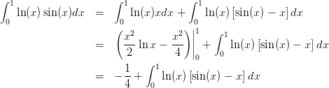
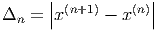

Exercícios
E 4.6.1. Considere o problema de 5 incógnitas e cinco equações dado por

- Escreva na forma Ax = b e resolva usando Eliminação Gaussiana para
ε = 10-3 no Scilab.
- Obtenha o vetor incógnita x com ε = 10-3 usando o comando A\b.
- Obtenha o vetor incógnita x com ε = 10-3 usando Jacobi com tolerância
10-2. Compare o resultado com o resultado obtido no item d.
- Obtenha o vetor incógnita x com ε = 10-3 usando Gauss-Seidel com
tolerância 10-2. Compare o resultado com o resultado obtido no item d.


- Discuta com base na relação esperada entre tolerância e exatidão conforme
estudado na primeira área para problemas de uma variável.
E 4.6.2. Resolva o seguinte sistema pelo método de Jacobi e Gauss-Seidel:
 Use
como critério de paragem tolerância inferior a 10-3 e inicialize com x0 = y0 = z0 = 0.
E 4.6.3. Refaça a questão 4.1.6 construindo um algoritmo que implemente os métodos
de Jacobi e Gauss-Seidel.
E 4.6.4. Considere o seguinte sistema de equações lineares:

Construa a iteração para encontrar a solução deste problema pelos métodos de
Gauss-Seidel e Jacobi. Usando esses métodos, encontre uma solução aproximada com


erro absoluto inferior a 10-5.
E 4.6.5. Resolva o problema 4.8.1 pelos métodos de Jacobi e Gauss-Seidel.
E 4.6.6. Faça uma permutação de linhas no sistema abaixo e resolva pelos métodos de
Jacobi e Gauss-Seidel:


